只在命名里改版本
把后缀塞进文件名，那个脚本读到的 version 就变了，其余脚本不受影响。
legacy-thing(%run_v_0.6.3).lua
一个 exe，三套引擎侧。engine.txt 里写一个词，决定这次启动的是谁。
六件事，短说。
body、vanilla、pe063 三棵树编在一起。选项里选完写进 engine.txt，下次启动走各自的源码、素材和 mods 目录。
0.6.3 / 0.7.3 的 Lua 回调名、裸类名、ClientPrefs 字段和旧对象路径都补了兼容层。改过哪些、还差哪些写在 docs/LUA_COMPAT.md。
在 Gameplay Settings → JS Engine 选 QuickJS，.js 就交给 QuickJS-NG：一个文件一个 context，一首歌结束回收。默认的 Troll 仍走原来的 Lua 转译。
脚本名加 (%run_v_0.6.3)，只有这个脚本读到的 version 变成 0.6.3，其余不受影响。HScript 也能用。
错误先写进 crash/PsychEngine_<时间>.txt，再进崩溃屏。QUIT 退出，MAIN MENU 或 M/ESC 回当前侧主菜单。
三棵树的 Paths 和 import 别名各自带前缀，同名 scripts/ 不会互相顶掉。修过哪几处写在 docs/SCRIPT_ISOLATION_AUDIT.md。
Options → Switch Engine，选完写进 exe 旁边的 engine.txt 并退出。
纯静态分发，没有安装器。解压，双击，然后在选项里挑一个引擎。
两个值得先知道的小机关。
把后缀塞进文件名，那个脚本读到的 version 就变了，其余脚本不受影响。
legacy-thing(%run_v_0.6.3).lua报错先写盘再进屏：crash/PsychEngine_<时间>.txt，内容包含引擎、时间、错误与调用栈。
“JS 那侧的 FunkinJS 转译器和存档，是故意留着的装置。”
README — 关于那段历史
这一块直接读仓库的 Releases，发新版后页面自己会更新。
下载按钮直接指向 GitHub Release 附件，历史版本在折叠区里。
改兼容层之前，先读这几份。
这条线站在谁的肩膀上，以及那一个被替代掉的。
本仓是 ShadowMario/FNF-PsychEngine 1.0.4 的 fork。公共层只许依赖 flixel / lime / std，三侧引擎共用同一个启动入口。
Apache-2.0
NovaFlare Engine —— 兼容层思路参考（FlxTween.globalManager.clear() 那套），Maopou 在那边做开发。
真 QuickJS-NG 运行时，源码与静态库放在 third_party/quickjs-ng/，产物不入库。
MIT · 见该目录下 LICENSE
（代替傻逼开发的 PE-QuickJs-Engine，烂完了还敢发，态度还恶劣）
JS 那侧的 FunkinJS 转译器和存档是个故意留着的装置 —— 针对 rongtang2026/PE-QuickJs-Engine 拿 {→end 冒充 JS 支持、违反开源协议那件事。存档原本塞在 JavaScriptUtils.hx 的注释里，2026-11-17 搬到了 docs/JS_TRANSPILE_HISTORY.md。
manage.sh / manage.bat 中心脚本入口
.workbuddy/toolchain/ 安卓 JDK17 + SDK + NDK（不入库）
.workbuddy/upstream/ 上游参照（pe063 / pe073 / pe104 / novaflare）
.workbuddy/memory/ 逐日流水账
source/ 公共层，只许依赖 flixel / lime / std
├── Main.hx 入口，读 engine.txt 分叉
├── Engine.hx engine.txt 读写
└── backend/{EngineCrash,CrashState}.hx 崩溃拦截 + 崩溃屏（三棵树共用）
source_body/body/ 改版 1.0.4（本体），包 backend.* / states.*，启动类在 body.Main
├── backend/ Paths / Song / ClientPrefs / ScriptClassAliases
├── psychlua/ FunkinLua / FunkinJS / JavaScriptUtils（校验锚点）
├── jsruntime/ 真 QuickJS-NG 运行时
├── objects/Bar.hx 尺寸 / 填充方向兼容
├── options/EngineSelectSubState.hx 引擎切换界面
└── states/PlayState.hx uiGroup 展开、旧容器、退出清理
source_vanilla/vanilla/ 原版 1.0.4，全部 vanilla.* 前缀
└── psychlua/IsolatedImports.hx import 别名表（manage.sh 功能 5 重建）
source_063/pe063/ Psych Engine 0.6.3，全部 pe063.* 前缀
docs/ 见下一节
third_party/quickjs-ng/ JS 运行时源码 + 静态库（产物不入库）
export/<mode>/windows/bin/ 构建产物，engine.txt 在这里LICENSE）LICENSE）Options → Switch Engine，写进 exe 旁边的 engine.txt
文档导航见「文档」一栏；改兼容层之前，先看 docs/AI_HANDOFF.md。
问题、想法、补丁，都往仓库里丢。
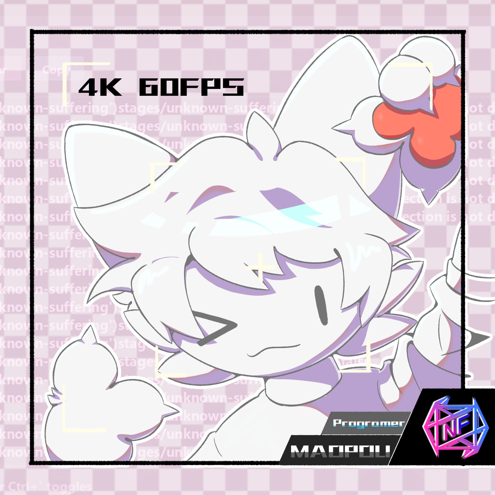
两块黑布，再点一次拉抽屉。
遮罩只是遮罩，默认黑块，悬停或键盘聚焦即还原原图。黑布揭开之后再点一次头像，从页面左右两侧各拉出一只抽屉，中间留着网页本身：左边是身份、联系方式与一段人物说明，右边是一摞分层档案夹，每格夹一层，点标题展开下一层，里面按文件夹分好截图，点开就是独立的预览窗口，右上角三颗键能最小化、最大化和关掉，开着几个都行。左抽屉底部的「收回抽屉」或点击中间那层网页都能收回去；右抽屉左边的把柄可以左右拖着改宽度，一路拖到最左就是整屏。
引擎自身的问题，单独开一格，不参与处刑。
这里是引擎本体的毛病记录，和上面两个人的恩怨分开存：截图按时间排，点开就是独立的预览窗口，右上角三颗键能最小化、最大化和关掉，开着几个都行。
原文照搬，一个字没改。
原存放于 FNF-PE_RealQuickJs_Engine/docs/JS_TRANSPILE_HISTORY.md，2026-11-17 从注释里搬出。2026-11-18 单独归档。原仓库 issue 已被全部删除，此处为 GitHub API 抓取的完整快照。
你无敌了，继续猛猛欺骗我们观众，继续张嘴就是瞎话，继续让开发的态度恶劣，
紧急补充：你们在试图销毁证据
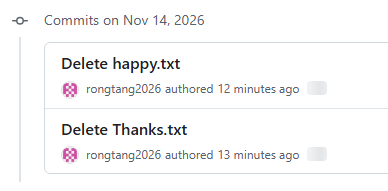
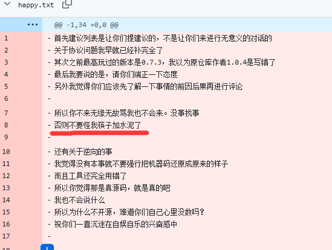
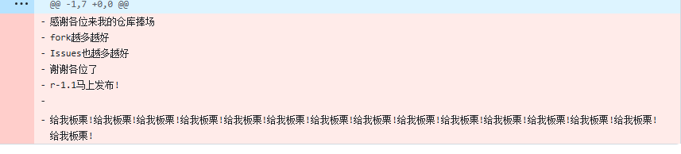
能在仓库直接开喷除了你们没别人了我笑了，内涵谁呢
首先你开源协议塞进加密的包里面不让别人看就是补上了？
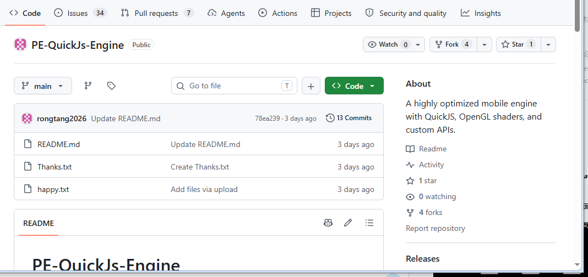
（仓库内的开源协议仍然是空的）（补充：这是20分钟前截的图）
00:06
首先空壳是你们说的，还自导自演上了
然后你javascript什么时候就是java了？连这两个都分不清楚，不愧是LLM用多了出幻觉了
00:15
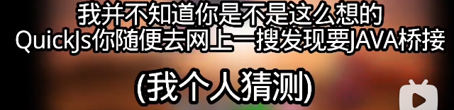
（还个人猜测，那不就是无知吗？）
00:25
（也是无知，以防你不知道quickJS作为一个解释器嵌入需要和haxe在C++架构上进行链接，不一个个调试根本不可以）
还原度18%继续编数字，请问反编译演示的编译版本里面所有的js正常运行，不就是你们所谓的核心功能吗？
00:28
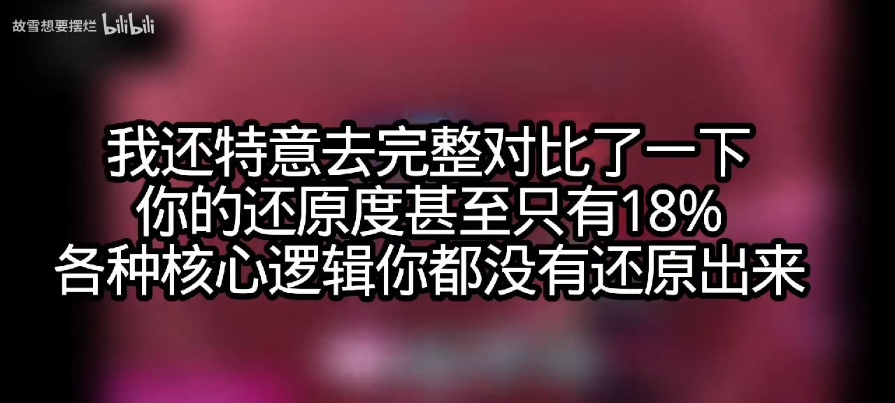
（你们的原话）
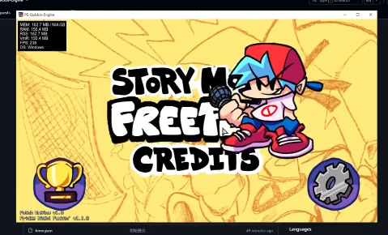
（另一边）
一张图说明不了什么，但是如果源文件呢？
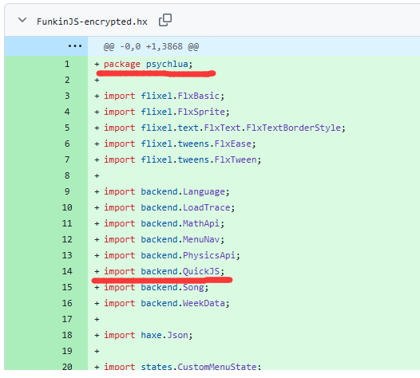
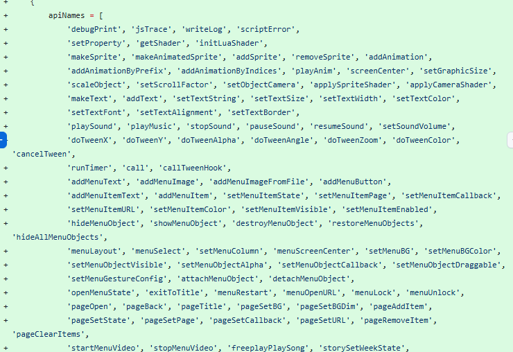
（注意，我们反编译可是拿到了完完整整的API表单）
00:33
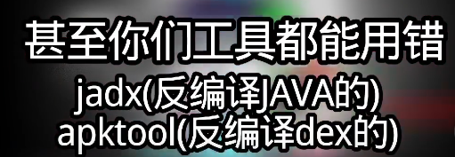
工具用错请问我们是两个一起用的怎么错了？反倒是某人使用破解版的IDA还跳脸的。
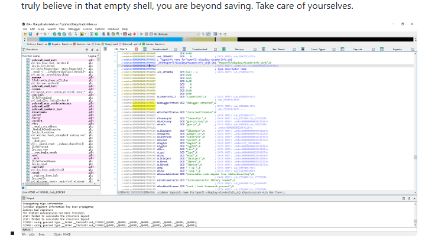
（github原图，可以自己看的github.com/rongtang2026/PE-QuickJs-Engine）
00:38
注意我们拿到的不是机器码，我们拿到的是拆包后的一堆dex和so文件，就算全部的源码已经经过2层编译器烧掉了，剩下的so文件仍然可以推出来关系（甚至明文api列表）
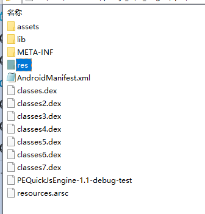
00:41
你说的？
那么请问这个怎么回事
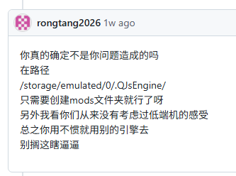
这是一切的导火索
首先是你们的态度低劣的，反倒倒泼脏水跳脸试图歪曲事实，你已经让圈内各大编程大佬都来观摩你的拙略表演你还不停手吗？
cv53912757
原神牛逼
很明显在6202年在一个拥有超过两千万同性恋的开源代码托管平台拥有一些人工智能生成的项目并不是一件很罕见的事情，笔者认为使用一个输入侧支持图像的预生成式转换语言大模型并不是一件可耻的事情，毕竟使用输入侧支持图像的预生成式转换语言大模型也是有优秀的，但是今天笔者遇到了一个让我惊呼：我操！这是什么！的一个我预计应该是使用输入侧支持图像的预生成式转换语言大模型制作的肥牛饭超级神秘项目，笔者认为很难把 心理发动机 不支持LuaScript 支持JavaScript 这几个八辈子不打关系的词关系在一起，更神奇的是我操还有火山开发接口支持，于是笔者打开了释放界面进行一个r-1.0.0的下载并且游玩
首先笔者进入就发现了一个问题：我操！怎么这么糊？？？？ 请看以下图片
笔者认为这可能是开发者不小心的把分辨率锁定到了720P这个在6202极其不高清的瞎眼分辨率，这个暂不评价
在随后笔者发现了第二个问题：我操！这个按钮怎么这么古老？？？？
笔者认为能在6202年再次见到这个按钮贴图简直是 伏黑甚尔给五条悟脖子戳了再补了不知道多少刀最后在离开时遇到充满鲜血活蹦乱跳的五条悟并且还有一句 "哟，撒西不理" ”真的假的“
然后就是笔者认为本引擎最招牌之一功能出现了，笔者一度认为这可能是 患有 脑部患有先天性或后天性智力障碍 或者 先天性缺少二十一号染色体引发的唐氏综合征 开发者才能做出的功能 笔者为何会做出如此高深的评价呢？请看以下文字
本项目拥有【JavaScript】的格式，对【Hscript】的语法的偷窃和对【Lua】的兼容
我操！恶俗啊！这个引擎支持【JavaScript】这个东西笔者认为已经很神了但是为什么要删除对【Lua】的支持并且进行一个对【Lua脚本】的肥美兼容？？？ 笔者在一个普朗克时间内推测可能是作者想要让该发动机对脚本性能进行提升的情况下还可以吃到大部分 由个人或者团队制作的游戏额外内容的肥美模组 的红利所以说才会干出这种把马踢了换成驴的操作
好的我们再看看其他的吧。 就在这时笔者发现了该发动机最肥美的物品【火山渲染开放接口】
就在笔者切换完毕进入Weekend1周目进行一个肥美的游玩时，该游戏发生了毫无征兆的崩溃，笔者百思不得其解，笔者使用一个普朗克时间分析首先该APK拥有整整376MB，不可能没有资产文件 当我打开文件管理器的时候笔者发现了最黑暗的真相——我操！资产文件还得自己放！ 到头来还得自己拼 终于笔者进入了游戏并且看到了对笔者造成了不可逆伤害的物品
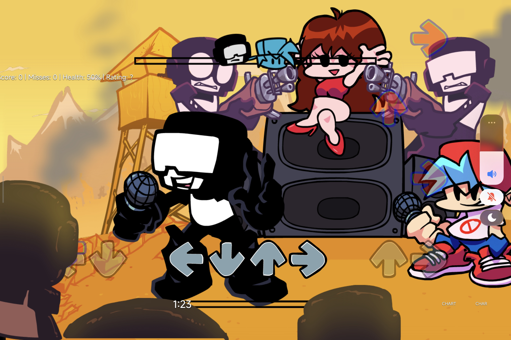
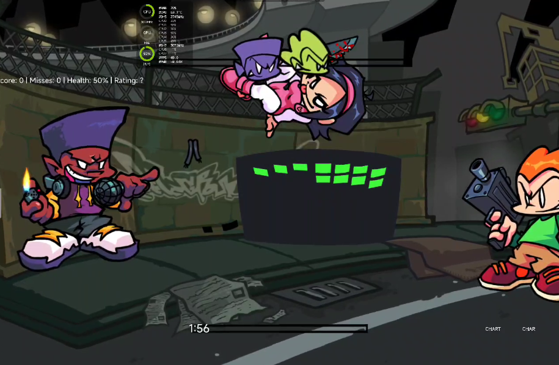
即使笔者拥有绷神大赛非面瘫获得冠军的纪录可是该图片还是成功使笔者破绷了并且笑爆我一颗睾丸，导致笔者与笔者老婆平均拥有1颗睾丸下降到平均仅有0.5颗睾丸 所幸明日是笔者的换蛋期所以笔者将会与笔者老婆再次平均拥有1颗睾丸
在最后笔者将发送最后两张图片
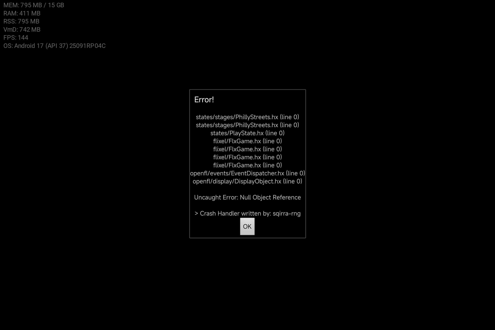
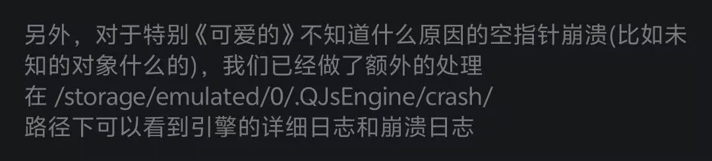
笔者并不反对使用一个输入侧支持图像的预生成式转换语言大模型进行创作的开源项目，哦不对此项目甚至是闭源导致笔者无法下载源码进行品鉴，但是笔者认为使用输入侧支持图像的预生成式转换语言大模型应该拥有一个健康的大脑提供良好的提示词进行创作，而不是做了一个糟糕至极半成品就发给别人进行品鉴
完.
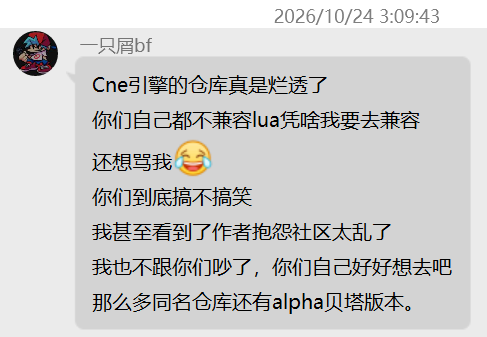
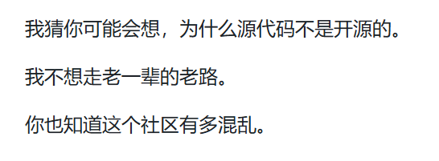
不想开源是因为99.9999% vibe coding 不敢吧，怕圈内人真扒开看到一堆浆糊来指责你，是这样吧？我们伟大的QuickJS-Engine作为Psych-Engine的二改分发版本怎么可能呢，对吧，所做的行为都是为了伟大的FNF社区的进步
主播的发言像三岁小孩的同时 这个溜溜梅生成粑粑也是不出所料的发布了. 原来Psych-Engine改版是可以不支持hscript和lua的 原来把lua的end改成j就是js了 我实在不理解为什么会把.lua和.hx后缀删掉就是移除lua和hscript支持了 不仅保持了0向下兼容的同时 还要往远古粑粑引擎里塞你这一坨粑粑溜溜梅也真是辛苦了
你的引擎只有 Android 构建吗，不尊重我们 MacOS 和 Windows 用户是违法的，你完了😡
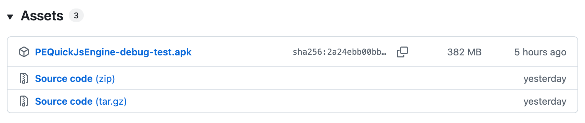
首先看到这个提示笔者很明显是知道 你应该是看到笔者严厉的批判导致一个破防的活动
在此笔者发表一个观点：
这个项目不敢开源大概是因为你这都是用溜溜梅vibe出来的垃圾吧 你应该很清楚你发出来这一坨会被人评价或者被人骂，但是你还是选择了发布其实我是挺佩服你的勇气的
此为笔者在一天前的想法，可是笔者在看完你的回复后觉得
我操！这就是个臭傻逼！
笔者觉得笔者发表的观点是正确的
笔者认为你的智商可能并不高所以我将给你最直接、最真相、最不绕弯、最扎心、最硬核、最干脆、最不墨迹、最戳痛点、最不留情面、最一针见血、最开门见山、最单刀直入、最不铺垫、最不客套、最不煽情、最不废话、最不拐弯、最不磨叽、最不装、最不端着、最不啰嗦、最不拖沓、最不委婉、最不掩饰、最不藏着掖着、最直白、最露骨、最实在的结论
首先回答第一个问题：你真的确定不是你问题造成的吗
呃我操原来我直接安装游玩然后崩溃了是我的问题啊，我操！我怎么这么坏！
第二个问题：在路径/storage/emulated/0/.QJsEngine/只需要创建mods文件夹就行了呀
我操你374MB的APK没Assets你他妈是塞了多少大狗屎？？？ 还是说你的 CopyState 他妈的根本不会复制Assets？ 笔者认为除了扔给溜溜梅一个心理引擎的移动端口让溜溜梅做而不是人工制作才会出现这种不过大脑的傻逼问题 好的假设这也是笔者的问题：我操！我怎么这么坏！
第三个问题：另外我看你们从来没有考虑过低端机的感受
笔者认为给低端机做优化你纯属是在搞笑
因为你项目内的东西比如js支持和给lua hx干死提升的性能甚至可能不足10% 对游玩时的影响甚至可能高达0% 笔者的朋友使用设备骁龙8e帧数在144到110跳 你他妈的现代设备优化都是狗屎何谈旧设备？？
暂且不论js支持和打死lua hx这件事情，单看给 旧设备 支持Vulkan渲染 你他妈是人啊？
笔者在2018手机SOC天梯榜找到最先进的芯片 骁龙835（搭载 Adreno 540 GPU）原生支持 Vulkan 图形 API，并可运行 Vulkan 1.0/1.1 版本。 笔者再假定也许项目作者的手机是未来的直接算到骁龙888 骁龙 888 支持 Vulkan，GPU 为 Adreno 660，官方驱动通常支持到 Vulkan 1.1。 以上为笔者上网搜索得到的资料并非意淫
笔者认为你让游戏能够正常渲染并且高性能并且支持现代化渲染游玩至少需要Vulkan 1.3版本 你他妈现在去给这么老的手机用Vulkan还不如OpenGLES2.0 还有我单看你这个Vulkan 笔者就可以推测后端完整度对比笔者本人的LimeVK项目可能不达3% 注：笔者做了Vulkan1.4的**所有命令包括常见的设备扩展命令并且自带可用的成熟**的一个渲染后端，并且自带一个 通过Glslang转译GLSLShader 的成熟方案 最多也就Vulkan1.0不到，可能还多了吧？
哦最后是：总之你用不惯就用别的引擎去，别搁这瞎逼逼
笔者认为以上文章是笔者游玩遇到的真实问题 并且因为该项目是闭源我还看不到你的代码是溜溜梅还是人写的 所以笔者推测是溜溜梅大狗粪 还有给老手机有好的体验并不是你**盲目跟风别人做VK支持和用溜溜梅做大狗屎**的理由
笔者认为你可能缺失了二十一号染色体 还有我劝你最好不是偷我Lime做的vulkan不然我这辈子就要被别人笑一辈子了
完.
对象：PEQuickJsEngine-debug-test.apk
大小：400,750,869 字节
SHA-256：2a24ebb00bb15efcc2d25eebda88d2067a2386554649d9e77cc0de961bf67142
作者声明：基于 Psych Engine 0.7.3
实际基底：Psych Engine 1.0（见第 4 节）
上游：ShadowMario/FNF-PsychEngine（Apache-2.0）
| # | 结论 | 置信度 |
|---|---|---|
| 1 | 代码基底是 1.0，不是 README 声称的 0.7.3。文件集与 1.0 交集 130/187，与 0.7.3 仅 96/187；34 个文件只存在于 1.0，0 个只存在于 0.7.3 | 高 |
| 2 | 这是 Psych 的 Haxe 源码分支，不是重写。endBullshit、reloadAllShit、grpMenuShit 等原版命名原样保留 |
高 |
| 3 | Lua 运行时被整体移除（lua_*/luaL_*/LuaJIT 符号 0），但 1.0 的 219 个 Lua API 函数名全部按原名保留（219/219），改由 QuickJS 执行 |
高 |
| 4 | QuickJS 集成是真实实现（backend.QuickJS.hx，JS_NewRuntime2/JS_Eval/JS_Call），非占位 |
高 |
| 5 | Vulkan 确实调了 Vulkan API（65 个 vk* 函数），但是旁挂渲染：OpenGL 仍在底下运行、单 render pass、贴图槽上限 47、投影矩阵写死 1280×720 |
高 |
| 6 | 包内存在完整性校验（Qz7 按 ZIP 条目算 SHA-256，Qz7r 控制 scriptsAllowed），改包即触发 "This copy of the game was modified or re-signed." |
高 |
| 7 | 与 Apache-2.0 §4 的许可文本义务不符：仓库 license 为 null，APK 内无 LICENSE/NOTICE |
高 |
| 8 | 资源包同样来自 1.0：含 weekend1/ 全套、Voices-Player/Player-Opponent 拆分人声、zh-CN.lang，与 README 声明的 0.7.3 不符 |
高 |
本报告只就下列可复现的技术事实作说明，不涉及其他社区讨论中的具体指控。
JDK 17 (Temurin 17.0.13+11)、apktool 2.11.1、python 3.13
jadx 1.5.1 —— 本机不可用，改用 apktool smali
java -jar apktool.jar d -f -s -o apktool_out PEQuickJsEngine-debug-test.apk
java -jar apktool.jar d -f --no-assets -o apktool_full PEQuickJsEngine-debug-test.apk
python scan.py lib/arm64-v8a/libApplicationMain.so <quickjs|lua|path|jni|version>
.so 内残留的 .hx 路径字符串。Haxe 为每个参与的类保留源文件名与符号，但空类或纯类型别名可能被漏掉。关键结论（Lua 运行时移除、基底版本）均有独立证据交叉验证。| 字段 | 值 |
|---|---|
| package | DingLing.pe.QuickJs.Engine |
| versionName / Code | 1.1.0 / 476 |
| minSdk / targetSdk | 21 / 30 |
| debuggable | true |
| 主 Activity | DingLing.pe.QuickJs.Engine.MainActivity，继承 org.haxe.lime.GameActivity |
| 高敏权限 | MANAGE_EXTERNAL_STORAGE、READ_PHONE_STATE、READ/WRITE_EXTERNAL_STORAGE |
清单基本是 lime 模板原样输出，连 iOS 专用键 SDL_ENV.SDL_IOS_ORIENTATIONS 都保留。
反汇编出 303 个类：新包名 DingLing/pe/QuickJs/Engine/ 14 个，旧包名 com/shadowmario/psychengine/ 10 个同名类残留（MainActivity、MemoryInfoHelper、VulkanSurfaceHelper 及 7 个内部类）。两套 MainActivity 内容完全相同，都是空的 GameActivity 子类。改包名后未清理旧生成文件，白占约 170KB。
| 组件 | 大小 |
|---|---|
lib/arm64-v8a/libApplicationMain.so |
49.6 MB |
lib/arm64-v8a/libvlc.so |
43.2 MB |
assets/assets/ |
310 MB |
| 其余（liblime、libc++、dex、res） | ~10 MB |
assets/
├── do NOT readme.txt 4,326 B 原版 FNF 的 readme
├── modsList.txt 0 B 空文件
└── assets/ 310 MB 游戏资源
├── songs/ 151 MB
├── shared/ 88 MB
├── videos/ 27 MB
├── week1..week7, weekend1 ~40 MB
├── fonts/ 8.1 MB
└── embed/ 11 KB
与上游 1.0 的资产清单（把 assets/base_game/ 映射回 assets/）对比：
| 项 | 数量 |
|---|---|
| 上游 1.0 资产 | 1,050 |
| APK 资产 | 871 |
APK 独有的 34 项里，除 haxelib 的 flixel/flxanimate 资源外，是他自己加的 vulkan_logo.png、opengl_logo.png、warn_icon.png、hitbox/、shared/scripts/demo.js、menu_demo.js 等。
这里的关键不是数量差，而是资源包的语言版本特征：拆分人声、zh-CN.lang、weekend1/ 全部是 1.0 的约定（详见第 4 节）。
用 .so 内 187 个有效 .hx 路径（剔除 flixel/openfl/lime 等第三方库）分别与两个上游 tag 做交集：
| 基准 | 上游文件数 | 交集 | 占项目 |
|---|---|---|---|
tag 0.7.3 |
129 | 96 | 51.3% |
tag 1.0 |
154 | 130 | 69.5% |
更决定性的是不对称性：
backend/Language.hx、options/LanguageSubState.hx、options/VisualsSettingsSubState.hx、options/NotesColorSubState.hx、states/ErrorState.hx、states/stages/PhillyStreets.hx、states/stages/PhillyBlazin.hx、states/stages/objects/ABotSpeaker.hx、states/editors/content/*（8 个）、objects/VideoSprite.hx 等资源侧独立印证：APK 含 assets/weekend1/ 全套（Weekend 1 是 1.0 内容）、Voices-Player.ogg / Voices-Opponent.ogg 拆分人声（1.0 约定，0.7.3 是单个 Voices.ogg）、assets/shared/data/zh-CN.lang（1.0 的 i18n）。
结论：README 里 “based on the original Psych Engine 0.7.3” 与实际产物不符。
项目 187 个文件，上游 1.0 的 154 个 → 新增 57，缺失 24。
他删掉的（24）
| 文件 | 说明 |
|---|---|
psychlua/FunkinLua.hx |
Lua 解释器接入主体 |
psychlua/CallbackHandler.hx |
Lua 回调分发 |
psychlua/ExtraFunctions.hx |
扩展函数注册表 |
psychlua/ReflectionFunctions.hx |
反射类函数 |
psychlua/ShaderFunctions.hx |
着色器函数 |
psychlua/TextFunctions.hx |
文本函数 |
psychlua/DeprecatedFunctions.hx |
兼容层 |
psychlua/FlxAnimateFunctions.hx |
FlxAnimate 绑定 |
psychlua/HScript.hx |
HScript 封装（库本体仍在） |
flxanimate/PsychFlxAnimate.hx |
FlxAnimate 集成 |
backend/Discord.hx |
移动端无 Discord |
shaders/BlendModeEffect.hx、OverlayShader.hx、WiggleEffect.hx |
三个着色器效果 |
states/OutdatedState.hx、states/stages/Template.hx、unused/*（7 个）、import.hx |
版本提示页、模板、废弃代码 |
他新增的（57，摘录）
backend/QuickJS.hx、psychlua/FunkinJS.hx、backend/ScriptContext.hx、backend/MenuScriptHost.hxbackend/VulkanAndroid.hx、backend/RenderBackend.hx、render/ModRender.hx、render/ModShader.hx、shaders/ErrorHandledShader.hx、substates/VulkanWarningSubState.hxmobile/ 下 14 个（MobileControls、VirtualPad、PianoKeys、MobileTextKeyboard 等）+ options/MobileSettingsSubState.hxandroid/Permissions.hx、android/Settings.hx、android/content/Context.hx、android/os/Build.hxCrashLog、NativeCrashHandler、HitchLog、LoadTrace、FpsPanelApi、ScoreRank、NoteLanes、Physics、MenuUI、MenuNav、MenuGestures、ApiDocs、Qz7r、states/CustomMenuState.hx、states/SecurityNoticeState.hx^lua_[a-z] 0 条
^luaL_[a-z] 0 条
LuaJIT 0 条
lua_newstate 0 条
lua_pcall 0 条
从上游 1.0 的 source/psychlua/*.hx 提取 add_callback(lua, "name", ...) / .set("name", ...) 注册的函数名，共 219 个；在 APK 的 .so 中按原名存在 219 个（100%）。
psychlua.FunkinJS 暴露 124 个方法，注册器按域切分：
registerCoreFunctions registerGameFunctions registerGameFunctions2
registerInputFunctions registerMenuFunctions registerFileFunctions
registerBackendFunctions registerAnimateFunctions
连 psychlua.FunkinJS.initLuaShader 这种名字里带 Lua 的方法都保留着。
结论：所谓“Lua 兼容”是函数名兼容，不是脚本兼容。219 个函数名齐全，却没有一行动能执行 .lua 文件——把 makeLuaSprite(...) 改写成 JS 语法后才能调用同名实现。
backend.QuickJS.hx:
new / eval / call / hasFunction / setGlobal / getGlobal
runPendingJobs / handleNative / onDispatch / boot
encodeResult / encodeArgs / parseResult / close
底层: JS_NewRuntime2 / JS_Eval / JS_Call / JS_CallConstructor / JS_EvalFunction
版本串: QuickJS memory usage -- 2026-06-04 version, %d-bit, malloc limit: %ld
libApplicationMain.so 中出现 65 个不同的 vk* 函数，覆盖 instance/device、swapchain、render pass、pipeline、descriptor、command buffer、image 上传、present 全链路。
边界同样明确：
vkCmdBeginRenderPass 只有一对），无深度附件、无 MSAA[VulkanAndroid] texture slots are full (47), further sprites will not be drawnOpenGL keeps running underneath until the Vulkan path fully replaces it, so switch back if anything looks wrong. → 覆盖层，不是替换substates/VulkanWarningSubState，文案 The Vulkan renderer is still experimental.mMat4Ortho(m, 0, 1280, 0, 720) → Vulkan 路径把画面渲染在 1280×720，再拉伸到设备分辨率6,249 行 smali、57 个方法，不含任何 OpenGL/EGL/Vulkan API 调用（android/opengl、javax/microedition/khronos、libvulkan 命中均为 0）。实际调用是：
Canvas.drawText ×4 Paint.setTextSize / setColor / setShadowLayer
Typeface.DEFAULT_BOLD Bitmap.createBitmap / setPixel / getPixels / recycle
它管理一个 SurfaceView，把 Surface 交给 native，同时用 Canvas 画 HUD 文字；native 通过 nativePushTextQuad、nativeSetHudValues、nativeGetHudLine 与之通信。
issue 原文的时序是“切换到 Vulkan 后进 Weekend1，崩溃”。可对应的静态事实有两条：Vulkan 路径固定 1280×720 再拉伸（糊），以及贴图槽上限 47（Weekend1 的 PhillyStreets 场景素材数量明显超过该值，超限后直接跳过绘制）。但崩溃本身未做动态复现，不作为结论。
DingLing/pe/QuickJs/Engine/Qz7（18.5KB smali）：
b()/c()/d() 取 PackageInfo、读签名（GET_SIGNATURES）classes*.dex、assets/、lib/、res/、META-INF/、AndroidManifest.xml、resources.arsc），用 SHA-256 逐项摘要，与内嵌 32 字节表比对（v()[B、a(I)I 按下标取 4 字节大端）okRoot(String) / okSo(String) 检查 root 痕迹与 so 存在性对应 Haxe 侧 backend/Qz7r.hx（boot、scriptsAllowed）。失败文案：
This copy of the game was modified or re-signed.
含义：改包名、去 dex、换 so、重签名都会命中，命中后脚本功能被关。当前包 debuggable=true 且为 debug 签名，是测试构建而非 r- 正式版。
| 项 | 状态 |
|---|---|
| 上游 Psych Engine | Apache License 2.0（GitHub API license.spdx_id = Apache-2.0） |
| 本项目仓库 | license: null，README 明示“我不想走老一辈的老路” |
| APK 内许可文件 | 全量检索 `license |
| 归属声明 | Psych Engine by 等字符串留在 .so，但无版权声明文本、无许可证副本、无 NOTICE |
| 第三方 | libvlc.so（LGPL-2.1+）随包分发，无许可证与源码获取说明 |
Apache-2.0 允许闭源分发衍生作品，所以“闭源”本身不违约。争议在第 4 条：
准确表述：闭源合法，不带许可证副本与归属声明分发不合法。
附带一条：README 声明基于 0.7.3，实际基于 1.0，这属于对来源的失实陈述——与许可义务是两件事，但同样影响可信度。
| 批评 | 判定 | 依据 |
|---|---|---|
| 删掉 Lua 却“兼容” Lua | 成立 | 运行时符号 0；219 个 API 名 100% 保留 |
| 引擎是 Psych 换皮 | 成立 | 原版命名、credits、130/187 文件重合 |
| Vulkan 完整度低 | 成立（有具体边界） | 65 个 vk 函数但单 pass、47 槽、OpenGL 兜底、投影固定 720P、自称 experimental |
| 声明 0.7.3 | 不实 | 与 1.0 交集 130，与 0.7.3 仅 96；34 个 1.0 独有文件 |
| 锁 720P | 部分成立 | Vulkan 投影矩阵写死 1280×720；OpenGL 路径未取证 |
| 进场崩溃 | 未验证 | 需动态复现；47 槽上限是可对应的事实，非结论 |
| 作者回复态度恶劣 | 有记录 | issue #2：“用不惯就用别的引擎去 别搁这瞎逼逼” |
| 作者回复疑似 AI 生成 | 间接证据 | issue #6 回复结尾附 chat.deepseek.com/share/… |
.
├── README.md 本报告
├── NOTICE.md 反汇编内容的来源与许可
├── LICENSE-APACHE-2.0.txt Apache-2.0 全文
├── report/report.html 排版版
├── findings/ 关键发现摘录
├── evidence/
│ ├── AndroidManifest.xml
│ ├── smali/ 303 个类的反汇编
│ ├── native/ QuickJS/Lua/路径/JNI 字符串、65 个 vk* 全表、1099 条 .hx 路径
│ ├── data/ vs_1.0_diff.json、assets_diff_10.json、Lua API 名单
│ ├── upstream/ upstream10/ 上游 0.7.3 与 1.0 的 psychlua 原文
│ └── assets/assets-file-list.txt
好消息：Psych 1.0换皮+QuickJS套壳，219个Lua函数名一个不少但运行时删得干干净净，"兼容"了个寂寞。坏消息：Vulkan写死720P再拉伸、贴图上限47超限直接不画、Apache-2.0的LICENSE和NOTICE全没给、反作弊比功能做得认真。视频说老手机不闪退——素材超47槽确实不闪退，因为直接没东西可渲了。作者被质疑AI代打时甩出一条带deepseek分享链接的回复，全仓库唯一的实锤是他自己递的。六个commit改同一个README，这就是"引擎项目"的全部源码。
在笔者回家后看到了两个issues，都是有关该项目的反编译结果
在现在看来笔者昨天说的都是没错的
单论将基底引擎从 心理发动机1.0.0 变成 心理发动机0.7.3 这件事情笔者就认为该项目作者可能患有以下病症
首先我们来看第一点：Lua 运行时被整体移除，但 1.0 的 219 个 Lua API 函数名全部按原名保留，改由 QuickJS 执行
很明显笔者使用了一个普朗克时间就猜出来你肯定是命令溜溜梅把LuaJIT丢进垃圾桶里面 笔者认为这个应该是没错的 但是你他妈都把LuaJIT丢进垃圾桶里面了，为什么不能把FunkinLua的函数删干净？
这可能你的溜溜梅忘记了这件事情吧
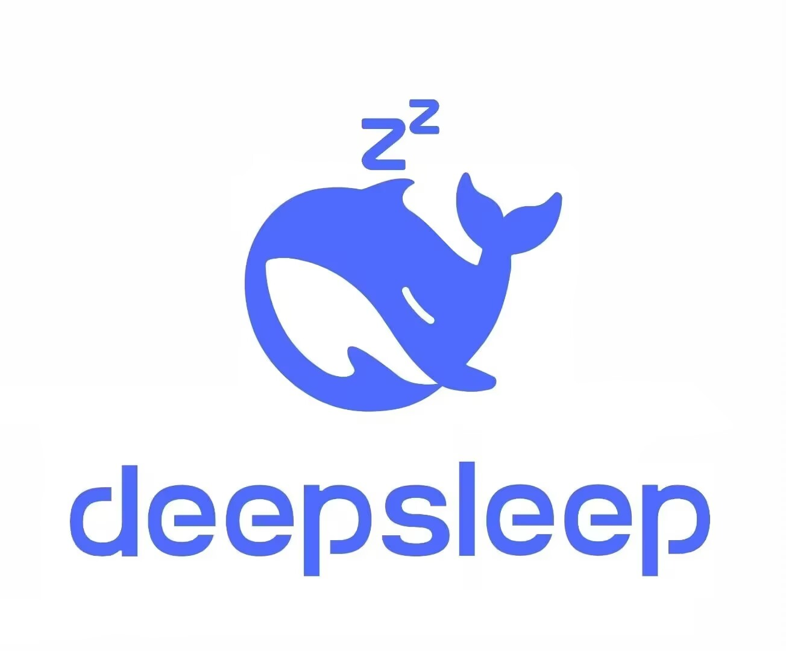
正在工作的溜溜梅
很明显项目作者并没有意识到这一点，当该发动机开源的时候，观测该发动机源代码的开发者应该会大喊：我操！恶俗啊！
接下来我们看第二点：_Vulkan 确实调了 Vulkan API（65 个 vk 函数），但是旁挂渲染：OpenGL 仍在底下运行、单 render pass_*
首先我不明白在一个 2018 年发布的火山版本都可以成功打死该项目的火山后端完整度是什么一句话
Vulkan 1.1 于 2018 年 3 月 7 日发布，总命令达到165条 —— 来自百度搜索结果
你敢用后端命令级别达不到1.1甚至1.0的火山后端我敬你是条人物
笔者认为作者的不怕死程度堪比鸭子
虽然这个已经很雷霆了但是你不应该先考虑一下 OpenGL 仍在底下运行 这一条吗？
OpenGL的广泛才是王道你那硬件不支持根本没人要，良好的性能才受大众喜爱你那垃圾性能早就被时代落败
笔者认为这两个东西应该是水火不容的东西不能在一起运行工作，但是该项目告诉我其实是可以的 在这里万分感谢该项目改正了笔者的误区 笔者使用未使用溜溜梅而是使用健康的大脑就想到了渲染后端应该由 Lime提供OpenFL启动时选择后端
下一条：包内存在完整性校验：签名证书 SHA-256、签名者数、debuggable 标志、APK 条目白名单，改包触发 "This copy of the game was modified or re-signed."
下一条：当前最新发布 1.1（2026-11-04）就是本包，debuggable=true、debug 签名，按作者自定规则不算正式版
笔者认为没什么好说的，只能说确实可能项目作者可能患有 后天性导致的眼部视力低下 还是那句话：有钱玩溜溜梅没钱配个眼镜？
Assets - 310MB
笔者认为作者可能是使用溜溜梅并没有仔细审查过项目 不知道CopyState是什么于是复制了自己溜溜梅告诉自己的东西来回复我
在最后笔者再次呼吁大家：保护智力障碍人群！纯傻逼除外 这就是个傻逼！
如果项目作者对有持有怀疑我的专业性的态度，欢迎打开我的Github主页查成分
如果看不懂笔者也为您准备了这个
ED.
灵感---> https://cubk.cn/articles/design-philosophy-through-openclaw
自信闪光嘉豪魔改psych engine 不知道什么版本反正一脚踹飞hscript和lua自信放下超级无敌大文档觉得所有人都会看自己手动把模组lua和hscript改成他最爱的js. 哦不不不为什么作为一个基础的游戏引擎居然还要我对模组进行手动修改以获得约等于滚木的提升才能进行玩耍 既然做了那也不做到底反正把结束换成j就行了那为什么不直接帮我把lua换成js 评价是没有十年脑血栓做不出来这样的引擎
首先看高能发言
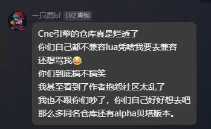
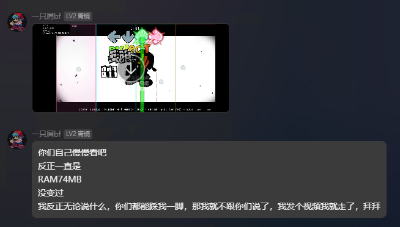
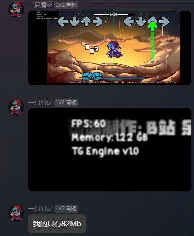
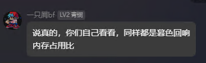
我去 居然是引擎自带的hxcpp内存探测器??!! 不得不相信了! 主播自己做的东西看的舍得打不开Windows任务管理器进行一个查看 搞半天原来是如同滚木一般的GPU Cache发力了!
[(你狐狸大人也是被这一坨大狗分震惊到了)](https://space.bilibili.com/511083372)(首先排除做这个的是人)
其次就是宁视频所谓18年手机流畅运行大型模组辣
18年手机在哪呢 大型模组在哪呢 请问宁的338MB的APK里不能复制出来的Assets就是大型模组了吗
以及这个我看一次笑一次的简介和评论
建议下次在和溜溜梅交流时使用项目记忆 而不是使用人工记忆 因为下一秒
注意到 这个所谓类人生物上下文疑似不足300 前脚说完比pe兼容性更上一层楼 后脚就说只兼容js! 不兼容 LUA! 搞半天原来这个兼容性指的是我还要自己手动把lua脚本end换成j再脱裤子放屁把lua改成.js! 这无疑是令人难绷的
更难绷的是 前文提到的雷霆大文档 以及评论区的傻逼狗托 这样都能有狗托你圈直接等死吧
你的意思是 我作为一个正常玩家 要使用这个溜溜梅引擎 还要我先自己把mod改好 才能运行? 评价为豪情在天的嘉豪随手一个指令造出了一坨溜溜梅大狗使并发布到bilibili进行一个流量的雷霆大吃然后再买几个狗托进行一个雷霆大洗地 好吧 如同前面几个issue提到的 作者如同丢失了心灵的窗户 看不到溜溜梅基于psych engine 1.0.4构建的源码并坚称此为psych engine 0.7.3
总之我再无话说 建议作者好自为之 停止使用豪情在天的语言高高在上批判hscript和lua 并修改标题为 我用溜溜梅搓了一坨大狗使 快点来吃。


PE-QuickJs-Engine · 基于 FNF-PsychEngine 0.7.3 · 上游 Apache 2.0
一个对外分发了不知道多少个版本、解包后 LICENSE 副本数量为 0 的“纯移动端重建”
CAUTION
我操！你他妈的 LICENSE 呢？？？
你基于 ShadowMario/FNF-PsychEngine（Apache License 2.0）做了一个“纯移动端重建”，对外分发过不止一个版本，解包一看——
LICENSE 副本：没有。 NOTICE：没有。 ShadowMario 的版权声明：不知道飞哪去了。 骂人的话：到处都有。
一边吃 Apache 2.0 的饭，一边把 §4(a) 当厕纸，一边在 README 里骂给你饭吃的人是“半吊子”和“无脑玩意”。
这不是行为艺术。这是行为艺术的行为艺术的行为艺术。
ShadowMario/FNF-PsychEngine 的 LICENSE 文件在 Initial commit（2021-07-07） 时就已经躺在仓库根目录了。Apache License 2.0，版权方 ShadowMario。
你 fork 也好，重建也好，魔改也好——你不可能没看见那个文件。它就叫 LICENSE，全大写，和 README.md 并排躺在根目录。
You may reproduce and distribute copies of the Work or Derivative Works thereof in any medium, with or without modifications, and in Source or Object form, provided that You meet the following conditions:
(a) You must give any other recipients of the Work or Derivative Works a copy of this License;
Apache 官方 LEGAL-642 讨论说得很清楚：4(a) 的措辞是 “give a copy”——不是“给个链接”，不是“在 README 里提一嘴”，是把副本给到接收者手里。
你给到接收者手里的 APK 里，没有 LICENSE。 那就没有满足 4(a)。没有解释空间。没有“我下次一定”。没有“这只是 debug 版”。
| 时间点 | 动作 | Apache 2.0 §4(a) |
|---|---|---|
| 第一个 release 之前 | 对外分发，什么许可证都没有 | ❌ 未满足 |
| README 声称 | “自 v1.1.0 起包含 LICENSE & NOTICE” | — |
| 新版本解包 | 依旧没有任何许可证文件 | ❌ 持续未满足 |
| APK 内部 | 骂人话到处都有 | — |
WARNING “对外分发”不是“发正式 release”才触发的。 网盘链接、公开可访问的仓库、发给社区成员 Sky 的测试包——在 Apache 2.0 面前，统统叫**分发**。
你递出去的每一个没有 LICENSE 副本的包，都是一次 §4(a) 违规。
The rights granted under this License will terminate automatically if You fail to comply with any of its terms. However, if You become compliant, then the rights granted under this License from a particular Contributor are reinstated... and You become compliant prior to 30 days after Your receipt of the notice.
翻译成人话：条件不满足 → 许可自动终止 → 继续分发可能落入版权侵权。 补救窗口是知道违约后的 30 天。
README 说“自 v1.1.0 起包含 LICENSE & NOTICE”。解包结果：没有。 那这 30 天窗口有没有被认真对待，是一个不需要猜的问题。
IMPORTANT 闭源 ≠ 免合规。 Apache 2.0 不要求你公开源码。但闭源分发必须给 LICENSE 副本、必须保留 ShadowMario 的版权声明、必须处理 NOTICE。这三件事，解包结果一件都没有做。
README 开头：
“I have the utmost respect for the original authors and pay my highest tribute to them.”
同一份 README：
“Just a bunch of half-baked amateurs...”
“It's because of you brainless beggars.”
“这个圈子没救了。”
问题在于你生气时站的那块道德高地，地基是空的。
一个连 Apache 2.0 第 4(a) 条——最基础、最没有解释空间、Apache 官方专门开 LEGAL-642 讨论过的那一条——都没有履行的人，用“最高敬意”开头，用“无脑玩意”收尾。
这不是“态度不好”。这是行为艺术。
还有那句 “100% built with AI”。AI 做的没问题。Sky 的 itel P663L 测试也证明引擎确实能跑。但 AI 不会自动帮你把 LICENSE 塞进 APK，AI 也不会自动帮你保留 ShadowMario 的版权声明。 合规责任是你的，不是溜溜梅的。
WARNING
所以，把话说直
1. 上游是 Apache 2.0。
2. 你 对外分发过。§4(a) 在分发发生的那一刻就生效了。
3. 你的 APK 里 没有 LICENSE 副本。不是“忘了发 release”，是分发本身触发了义务。
4. README 说“自 v1.1.0 起包含 LICENSE & NOTICE”。解包结果如果与之矛盾，那是声明不实。
CAUTION 把 LICENSE 放进 APK。保留 ShadowMario 的版权声明。检查 NOTICE。把 README 里那些“半吊子”“无脑玩意”删了，换成一句“本项目闭源，禁止未经授权的逆向与再分发”。
边界照样立得住。而且不用一边违反 §4(a)，一边骂别人“半吊子”。
你骂别人“半吊子”的时候，Apache 2.0 §4(a) 正在看着你。
第一个是vslice 0.3.0，作为一个溜溜梅开发的引擎竟然也有如此待遇，实在是可喜可贺
我不知道你到底是用哪里想出来的把Lua给换成的JS 你是希望还有人在PE上面给你转成js吗？ 不兼容原版PE的模组那做这个引擎还有什么意义？ 你难道希望把CNE给干飞吗？
我也不想过多评价
干掉了lua 毙掉了hscript 新添了QuickJs 还是lua写法😍😍😍😍😍😍😍😍😍
我的妈呀 这个引擎太牛逼了 这个让我刮目想看 0.7.3结果是1.0.4😍😍😍😍
以及怎么还有古董级别的按键😍😍😍😍😍
lua后缀改成js 闭合end 改 {}😍😍😍😍😍这个相想真***太牛逼了
还拿CNE当盾 哇哇哇😍😍😍😍😍😍😍😍😍😍😍😍😍😍😍😍😍😍😍😍😍😍😍😍😍
以及超模的优化😍😍😍😍😍😍 肥牛饭即将迎来大变😍😍😍😍😍😍😍 100%AI + 神秘态度作者 造出来的超**引擎
让新的光明鼓掌**🙏🙏🙏🙏🙏🙏** 我去怎么还给我闪瞎了😭😭😭😭😭😭
IMPORTANT AAA构式疲乏R哥
- 已品鉴一滩沟水
我并不知道某些人装模作样的以为自己成功逆向了，连自定义 API 都不知道，依旧是一群半吊子。我真搞不懂，难不成弄一个新的魔改引擎就必须把整个界面的 UI 风格全变了吗？
但是吧，我承认确实有些地方可能有点小 Bug，那只不过是因为盲目做自定义 API 忘了。还有，这个项目确实 100% 是 AI 做的。
我终于明白为什么那么多作者都停止甚至跑路了，还是因为你们这帮无脑玩意和伸手党。唉，怪不得说这个圈子没救了。
很明显，项目作者在看到笔者的开源版本已经急眼 因为他根本看不懂我开源的是什么，反编译还原的又是什么，只能使用溜溜梅无能狂怒憋出一个新的readme
可是笔者认为在项目作者写README时应该经过实际考察和大脑的思考 而不是在一时愤怒之下憋出一个业内人士看了只会说：这他妈脑子有病吧！
虽然笔者认为本来花费我的儿子网络5.5和旮旯木5.3闪光的额度来搞你这坨屎很浪费 奈何笔者确实是没事干了于是便边看番边搞你这坨大狗屎的逆向
对于回应这个读我.妈的：
第一条“如果你连像IDA这样的逆向工程工具都不知道，请不要随便评论”
笔者认为写代码的大约有两类人
1.在没有溜溜梅的时候就开始写代码的人，后来转入溜溜梅进行辅助开发 2.在溜溜梅出现的时候才开始写代码的人，后来转入溜溜梅进行主要开发
虽然看着好像就差了几个字，但是笔者认为这两者的差别非常大 很明显该项目作者就是第二种人，笔者经过推测得出结论
如果没有溜溜梅你这十年内都不可能发布出这个项目
为何笔者敢如此笃定这个结论？
首先从README.妈的我们就可以看出，这大概率是一个使用溜溜梅翻译的README.妈的，因为这段英语没有任何口癖并且用词异常谨慎
连一个README.妈的都懒得自己写，就可以看出你根本不可能会很有耐心的学习编程 就连笔者的反编译开源版的README.妈的都是手写的而不是用溜溜梅生成
再然后项目作者曾说过
Cne引擎的仓库真是烂透了 你们自己都不兼容lua凭啥我要去兼容 还想骂我 你们到底搞不搞笑 我甚至看到了作者抱怨社区太乱了 我也不跟你们吵了，你们自己好好想去吧 那么多同名仓库还有alpha贝塔版本。
这种话 笔者认为只要是使用过Github的人基本都会查看域名推断是谁的仓库 甚至Github本来就有Fork的标识 这你还认不出？ 可能是后天性的眼部疾病
就算抛了骂仓库这段就论”CNE不兼容lua凭什么要我去兼容"笔者还是认为你就是一个纯粹的傻逼 因为CNE用的是高度扩展过的Hscript，功能对比原版多了不是一星半点儿 而且他还是用的该引擎的语言当脚本的，笔者请问Haxe和JavaScript有任何关系吗？ 为了用你这个引擎还得多学习一门脚本语言，那可真搞笑
从以上内容我们可以看出项目作者大约是一个只会依赖溜溜梅进行反击和长篇大论甚至我认为可能到现在一点Haxe都不会的人 你会写HelloWorld吗？
我认为你可能连这个都不会
而且我认为能在issues指手画脚甚至骂你的人，都是上述的第一种人
第二条”我无法保证那个假仓库的作者是否秘密植入了病毒。如果你下载并运行，别怪我，去找他们吧。“
首先笔者开源版的仓库内主要包含了以下文件
.hx .txt .html .json .js .bat
笔者认为这些文件除了.bat可能有让你的机器有爆炸风险其他是肯定没有危险性的文件的东西 甚至bat文件是可以查看的而不是机器码二进制需要反编译才可以查看的高级物品 笔者不明白你为什么会说出毫无逻辑的话
但是从这句话暴露了项目作者大概率就是一个无知，愚蠢的人 笔者曾被质疑过：在Lime.ndll塞后门 可是鲜有人知的是lime的c++后端连发包都做不到，简直是空谈 更奇异搞笑的是：我发布的真正有价值的仅有Haxe源代码，如果是新手你可能都不会编译得到产物 并且通过Hxcpp生成的程序绝对并且100%是机器生成的，也就是说你的恶意代码一般都是在杀毒软件特征库内的了 可能还来不及感染就被杀进程了吧
笔者认为溜溜梅时代降低编程的门槛在一定程度上是坏事，简直是让狗也能分一杯羹
第三条”我已经检查过了，如果你真的相信那个空壳，你就无可救药了。”
虽然笔者已经看到你在QQ发言被截出特别雷霆的截图 笔者简单阐述以下内容
项目作者 使用 DeepSeekAPP 中的 Chat 模式，未开启 深度思考 功能，来分析我的仓库 并且断言笔者的仓库还原的所有文件都是空壳子
那真是抱歉了你看这张图片吧
使用JavaScript脚本在MainMenu中创建了一个BF人物
笔者认为使用比文件夹大小确认是否是空壳的方式真的很蠢，相信了这一条的项目作者母庸质疑的是一个蠢逼 综上所述：笔者认为该项目作者是一个
的傻逼，笔者曾说过一句话
笔者重来不反对使用AI合成的项目，笔者反对的是使用AI合成的无脑/不审查/垃圾的项目
并且你非常自以为是 为什么issues的人甚至NovaFlareEngine的程序员都不会支持你
这是你应该思考的问题
第四条：“照顾好自己。”
这是你对自己的话。
ED.
本次提交仅修改了
README.md，改动内容为：If you don't even know what a reverse-engineering tool like IDA is, please don't comment randomly. I cannot guarantee whether the author of that fake repo secretly embedded viruses. If you download and run it, don't blame me, go find them. I've already checked it, and if you truly believe in that empty shell, you are beyond saving. Take care of yourselves.
我并不认为你已经完成论证。原因很明确：你使用的是 DeepSeek Chat 网页端进行分析。根据相关聊天记录，可以看出这种分析方式存在明显问题。
一个聊天端 DeepSeek，在仅仅具备网页搜索能力的情况下，就直接断定 Open-QuickJs-Engine 是一个空壳项目。这个结论与事实完全不符。
相关聊天截图：

FunkinJS.hx”的说法我至今没搞懂，你是如何在不开启深度思考的情况下直接去问的。
截图中所说的“缺失的 FunkinJS.hx”，在 Open-QuickJs-Engine 中并没有缺失。详见：
更何况，这是一个在没有任何 agent 环境下的模型。该结论很明显是模型幻觉和网页获取问题共同造成的。
说白了，我没看懂你是怎么敢把这些聊天记录直接发出来的。
把 Lua JIT 换成 JS 这波操作，我也属实没看懂。
建议先看一下实际运行效率，再讨论这种替换是否合理。
你有没有勇气看完全文做出回应呢?
如果某一些人还想说又是一个半吊子，哦不，我算是CNE引擎部分功能开发的提交者，CNE引擎内制作人榜单里面有我名字，如果说这还算半吊子那是不是可以认为所有的CNE开发者都是错误的，包括开发模组的? 如果你觉得都是错的那你去跟他们说吧，他们很愿意别人提问题的。还是说你觉得他们太强大了，有足够的实力你说的话他们不会听? 又或者说是你觉得他们从2022年几乎纯手写代码构建引擎的实力在你眼前还不够我正眼看他们? 我还参与了大量高质量模组哦不那些模组也是错的吗?你认为你想要知道是哪一些我可以发，不过还有大量的文段所以先不列举。注意我说的是可以列举哦，而不是说不能说。
好吧我们不说这些我知道你想比实力，好的让我们看看 是谁在AI时代后才开始写代码的，你赢了。 是谁非常聪明的在github发布安装包却没有发布源码，开源协议直接当空气的，你又赢了。 项目被别人反编译开源还说不确定有没有病毒的，哦还是你赢。 是谁手动写代码都写不明白就开始用AI写代码了，还是你赢了。 是谁用AI分析反编译代码连思考都不敢开，开了就暴露了，你赢赢赢，用Deepseek app只会迎合你的情绪，我看你的精神已经饱满，ai只是略施小计就让你又可以开心过好一天，多好的事啊。 是谁只发布安卓端连桌面端都不发布呢，你已经赢到脚趾尖了。 是谁把所有人当半吊子但是没有查过他们真实实力呢，你身边满是奖杯。 是谁只敢在背后悄悄议论，连正面对抗都不敢，是不是辩论的理由找不了那么快呢，你已经躺赢了。
所以说到底是谁在影响整个圈子呢，还不就是你，你你你，要不要想想为什么那么多人反对你呢，到底是自己的错还是别人的呢，别人的错那也只能是了解情况不够啊，可是你这都摆到面前了信息都充足了，甚至都是依据你说的来反对的。那问题出在谁身上? 还是说你就只是觉得自己那么辛苦用AI搞出来这么个东西，就可以不看质量直接说他最厉害、最强了? 我可以这么说你的辛苦一文不值。一文不值。
小朋友luajit可是标准理想情况有c++ 90%的运行速度哦，你牛逼的"JS解释器"是相当于 c++百分之几的运行速度 ? 如果说运行速度超越c++你会被我们笑掉大牙的 JS解释器，哦不，难道是用haxe代码写的JS代码语法运行? 如果是这样的话那连c++ 1%的性能都不如，你说的JS性能该不会JS代码被运行的方式都没有弄明白吧
有没有弄懂开源协议开源协议是必须的，而且不遵守开源协议也是错的，小朋友你犯法了。别跟我说犯法在哪，这一点都不知道那你有何用? 小朋友信息可不能全都是别人你都要自己搜，用AI来帮你搜我会笑的
我第1次在fnf看见用README来回怼人的，哦不你是什么异类吗? 有问题光明正大的直接在别人说的话下方说行不行? 反正都公开了不是一样的吗? 还是说你想直接把这份话直接贴脸到所有来看你项目的人? 你已经默认了所有来看你项目的都会来攻击你? 很好笑了兄弟
我在想你是继续自我感动还是咋样呢，好吧我知道这应该由你来决定
我同时也很好奇假设没有AI你能走得多远，在原地踏步吗
不过我觉得你看完肯定会哑口无言，你但凡漏了一件事没有反对那就代表你认可我说的那句，千万不要不回应哦，不回应那就是你认可了。你想找到地方反对我吗? 你肯定想你想到爆炸! 但是你要往哪里想呢，好吧这个有趣的事情让你来提出，这真的很有意思，你是在QQ群里面又偷偷议论见不得光的说，还是直接在提问下方回复我呢，好期待啊 又或者说直接骂了我，你骂有啥用呢，来来来多骂点，看看你词汇量咋样。 而且你最好别直接跳到结尾来看我会笑的。赶紧给我回去看完了再看这里。别跟我说不听我的话，如果说你是看完了才看到这里那好吧我觉得你不会完整看完我把你看得太低了。
自从发布后，（作者）这里肯定没少被骂。 所以，我将会以最直接、最真相、最不绕弯、最扎心、最硬核、最干脆、最不墨迹、最戳痛点、最不留情面、最一针见血、最开门见山、最单刀直入、最不铺垫、最不客套、最不煽情、最不废话、最不拐弯、最不磨叽、最不装、最不端着、最不啰嗦、最不拖沓、最不委婉、最不掩饰、最不藏着掖着、最直白、最露骨、最实在的结论依次分析对比患有以下疾病
!大脑语言模块萎缩! ?先天&后天性失明? -重度模因污染- ↓遗传性智力问题↓ ↑溜溜梅严重依赖症↑ 自大症 被害妄想症 城墙脸皮
的“无辜”宣发&他的豪情在天的作者&没长脑子的狗托&欺软怕硬的出生的言论
我自己都笑了，还是因为SCP基金会根本不存在要不然为什么遍地异常类人生物
首先，万恶之源之

这谁绷住了可以被野兽先生奖励100w刀乐 就不说内容吧，这段发言是个明眼人就能看出来 卧槽，学渣啊！ 这段文字可以看出作者的母语发言能力堪比一个成年大香蕉 你可以在短短几行文字中找到 Cne 大小写混乱；“引擎的仓库”语义重复； 缺少“连”字，“都”字悬空（“连你们自己都不兼容”才通）；lua 大小写混乱；一句话里塞了两个分句且无标点； 主语脱落；“还想”语义不对 缺谓语的残句；“还有”后缺量词；alpha 用英文、beta 用音译，中英混排不统一；句号与全篇语气不符，是质问应作问号
说回内容，你怎么知道CNE烂透了？怎么看到作者发言了？同名仓库是啥，你所谓的PE - quickJS吗？我们怎么也要反思？（莫非作者真有天眼看到4维空间？？）
*我已急哭
这么做好比你买了一台冰箱，你嫌冰箱难用给冰箱压缩机拆了换成冰块，降效增本就算了，你给我拆好了啊，压缩机的线还留着
（注意：运行时移除是在代码执行的时候对着lua直接来了个destory，而不是从源代码在编译前就从硬盘上物理移除。并且我推测，是不是因为lua根深蒂固拆不掉导致只能用js+同名函数顶上）
你可能疑惑怎么还能开发一键转化？
答：这tm是靠PE的1.0兼容性硬顶着，所谓js实际上就是跳板跳来跳去最后还是由一个被砍废的解释器运行，甚至只用改一下闭合符&后缀就行了，你说好的 然后 顺手 最后
还是冰箱，你看起来给冰块放进去还能用，但是让这堆冰块保持运行的已经是只剩下电源线的压缩机了
————————————————————————————————————————
行行行，我进游戏前不看问题了吧
当我美滋滋打开仓库的时候
PE仓库分发的开源协议呢？？？？
什么？被爆源码了？？
（speechless）
哦不不不你再去看看issue
诶呀，怎么一堆issue在骂你 于是你找了找找到了所谓的源码
好可怜啊，不对
进来第一眼：不对啊
然后思考：不对啊，那么主界面怎么回事 （思考过程中，你看向了左下角）
FNF v 1.0.0？？！！！！
（已被未来版本吓到的劳BF）
疑似怀疑作者是否是只改了版本号替换导致出现的问题 你问我有没有可能为了拿到点PE1.0的优点？
哦不的不的 还记得我说过的PE1.0吗，我怎么知道的？？
于是你吓得关上游戏，让其他issue来帮你补充
#2 #9
（我就这样）哦太好了作者找到反驳点了 但是你发现了疑点
我又急哭了
这里再让其他issue帮我介绍一下
#6
话说回来，你的仓库怎么只在改一个readme文件啊，改了7次了都
而且为什么你还要在发布后再加上“免责声明”
并且批判你后你怎么还偷偷换包了
（我没招了）由此可知，作者在患有
!大脑语言模块萎缩! ?先天&后天性失明? -重度模因污染- ↓遗传性智力问题↓ ↑溜溜梅严重依赖症↑ 自大症 被害妄想症 城墙脸皮
的前提下就是个大量使用溜溜梅生成AI垃圾后拉到我们脸上给我们抹匀然后不允许我们擦掉一擦掉就死命的怼我们，对自己一无所知，对AI期盼极高，拉上一堆无辜人陪葬的
臭
傻
逼
（假设，假设此时天选就是作者）